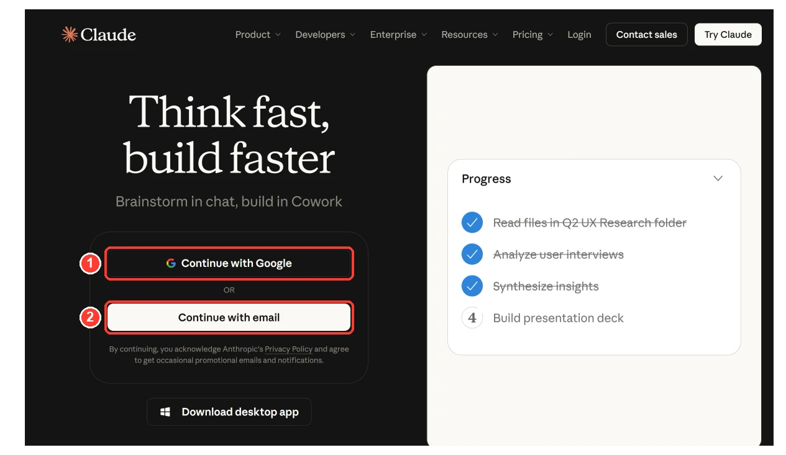
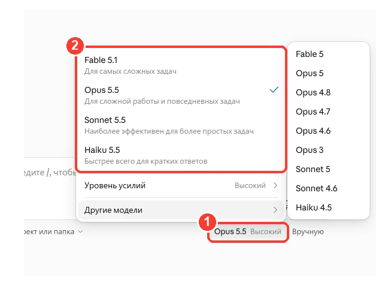
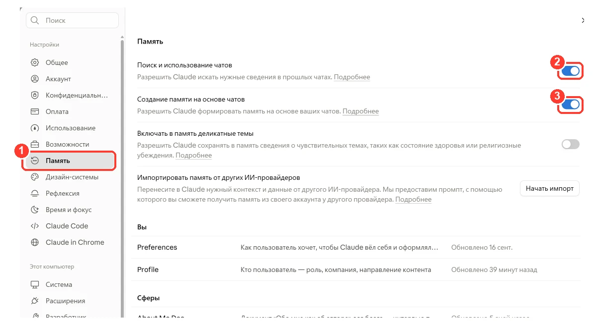
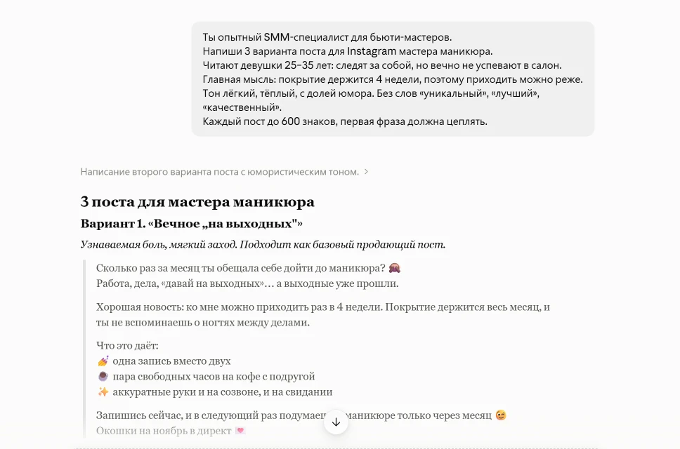
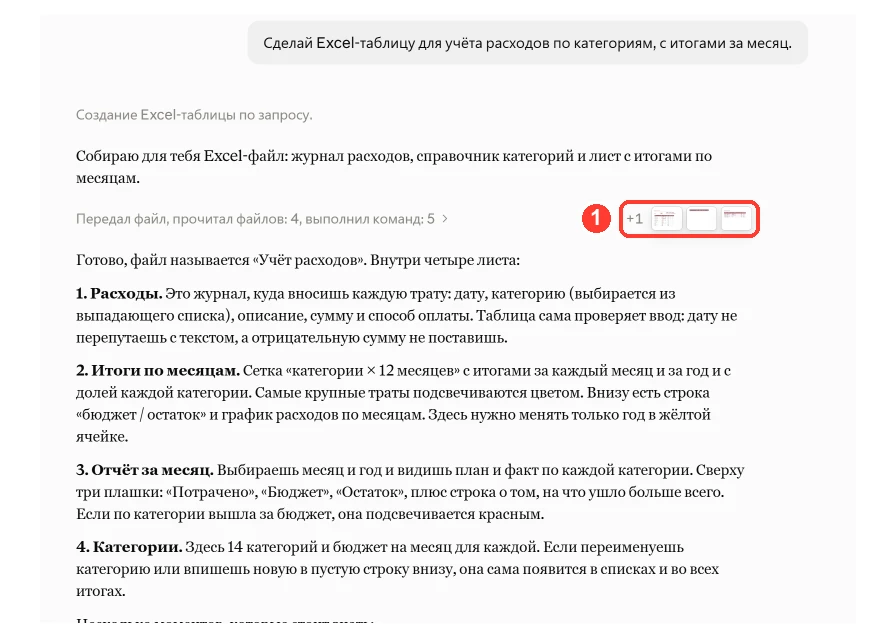
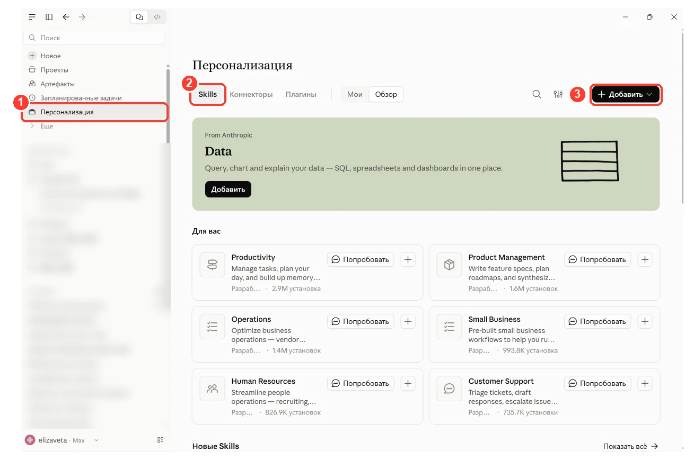

≈ 1 час · 5 шагов · 9 готовых промптов · без кода и английского
Если ты давно хотел(а) разобраться с нейросетями, но каждый раз откладывал(а), потому что «там сложно» и «это для айтишников», этот гайд для тебя.
Здесь нет теории ради теории. Только то, что нужно сделать руками, чтобы уже сегодня Claude писал за тебя тексты, разбирал документы и помогал с делами. Код знать не нужно. Английский тоже.
Что ты получишь к концу гайда:
настроенный аккаунт Claude, который помнит, кто ты
простую формулу, по которой ИИ понимает тебя с первого раза
своё рабочее пространство под постоянную задачу
9 готовых промптов, которые можно копировать и сразу использовать
Как проходить:по порядку, шаг за шагом. Весь гайд займёт около часа. Сохрани его, чтобы возвращаться к промптам.
начнём
Что такое Claude и почему с него стоит начать
Claude — это ИИ-ассистент от компании Anthropic. Ты пишешь ему обычным языком, как коллеге в мессенджере, а он отвечает: пишет, объясняет, считает, разбирает файлы, создаёт документы.
Представь очень толкового коллегу, который:
не устаёт и не обижается на десятую правку;
читает 50-страничный документ за минуту;
умеет и в тексты, и в таблицы, и в презентации.
одно «но»
Он не умеет читать мысли. Качество ответа почти всегда зависит от того, как ты поставишь задачу. Этому посвящён шаг 2, и это самая важная часть гайда.
шаг 1
Регистрация и три настройки
1.1. Создай аккаунт
Зайди на claude.ai и зарегистрируйся через почту или Google-аккаунт. Система может попросить подтвердить номер телефона.
важно
Claude доступен не во всех странах. Если регистрация не проходит, проверь, есть ли твоя страна в списке поддерживаемых на сайте Anthropic.

1 — вход через Google, 2 — или через почту
Бесплатного тарифа хватит, чтобы пройти весь гайд и попробовать Claude в деле. Если появятся вопросы по тарифам, пиши мне, подскажу.
1.2. Разберись с выбором модели
В окне чата есть переключатель моделей. Это как разные «уровни мозга» одного Claude:
Модель
Когда брать
Fable
Самая мощная модель Claude. Для самых сложных и объёмных задач, где важно максимальное качество
Opus
Сложные задачи: анализ, большие тексты, стратегия, код
Номера версий у моделей регулярно обновляются, а логика остаётся той же.
Какие модели доступны на каком тарифе
Тариф
Что важно знать
Free (бесплатный)
Хватит, чтобы познакомиться с Claude и пройти этот гайд. Выбор моделей меньше, Fable недоступна
Pro
Больше лимитов и доступ к сильным моделям. Fable можно выбрать, но она не входит в лимиты тарифа и оплачивается отдельно, из дополнительных кредитов
Max
Тариф для тех, кто работает с Claude каждый день и много. Fable входит в тариф: на неё можно тратить до половины недельных лимитов без доплаты
Если хочешь регулярно работать с Fable, удобнее всего тариф Max.

1 — нажми на название модели, 2 — выбери нужную
1.3. Включи память
Открой Настройки → Память (Settings → Memory) и включи переключатели «Поиск и использование чатов» и «Создание памяти на основе чатов». Claude начнёт запоминать важное из ваших разговоров: как тебя зовут, чем ты занимаешься, как тебе удобнее получать ответы. Там же можно посмотреть и отредактировать, что именно он запомнил.

1 — Настройки → Память, 2 и 3 — включи оба переключателя
1.4. Познакомься с Claude
Отправь первое сообщение. Не формальное «привет», а нормальное знакомство: так память сразу начнёт работать на тебя.
промпт · знакомство
Привет! Давай знакомиться. Меня зовут [имя], я [чем занимаешься].
Чаще всего мне нужна помощь с [2–3 задачи: тексты, планирование, учёба…].
Мне удобнее, когда ответы [короткие и по делу / подробные, с примерами].
Запомни это, пожалуйста. И расскажи, чем ты можешь быть мне полезен.
Если в ответ пришёл список того, чем Claude может помочь именно тебе, всё настроено. Идём дальше.
шаг 2 · самое важное
Формула запроса: как говорить с ИИ, чтобы он понял
Главная ошибка новичка звучит так: «Напиши пост». Claude напишет. Но это будет средний пост ни о чём, потому что он не знает, кто ты, кому пишешь и зачем.
Нейросеть работает только с тем, что ты ей дал. Мало информации на входе — средний результат на выходе.
Пять вопросов, на которые должен отвечать твой запрос
Перед тем как отправить задачу, мысленно пройдись по пяти пунктам:
Вопрос
Что написать
Пример
Кто?
Какую роль сыграть Claude
«Ты опытный SMM-специалист»
Что?
Конкретный результат
«Напиши 3 варианта поста»
Для кого?
Кто будет читать
«Для девушек 25–35, которые следят за ногтями, но жалеют времени на салон»
Как?
Тон, стиль, ограничения
«Легко, с юмором, без слов "уникальный" и "лучший"»
В каком виде?
Формат ответа
«Каждый пост до 600 знаков, с первой цепляющей фразой»
Не обязательно каждый раз заполнять все пять пунктов. Но чем больше из них в запросе, тем точнее ответ.
Посмотри на разницу
так себе
промпт
Напиши пост про маникюр.
рабочий вариант
промпт
Ты опытный SMM-специалист для бьюти-мастеров.
Напиши 3 варианта поста для Instagram мастера маникюра.
Читают девушки 25–35 лет: следят за собой, но вечно не успевают в салон.
Главная мысль: покрытие держится 4 недели, поэтому приходить можно реже.
Тон лёгкий, тёплый, с долей юмора. Без слов «уникальный», «лучший», «качественный».
Каждый пост до 600 знаков, первая фраза должна цеплять.
Первый запрос даст шаблонный текст, который можно найти где угодно. Второй даст текст, который уже почти можно публиковать.

Ответ Claude на рабочий запрос
Приём, который меняет всё: пусть Claude спросит сам
Не знаешь, что написать в запросе? Переложи это на Claude. Добавь в конце любой задачи одну фразу:
добавь в конец запроса
Прежде чем отвечать, задай мне 3–5 вопросов, которые помогут
сделать результат точнее. Начинай работу только после моих ответов.
Claude сам спросит то, о чём ты даже не подумал(а). Это лучший способ быстро научиться ставить задачи: через неделю ты начнёшь сразу писать запросы так, что вопросов почти не останется.
Три правила спокойной работы с ИИ
Первый ответ — это черновик.
Не ищи идеал с первой попытки. Скажи, что не так: «короче», «проще», «убери пафос», «добавь конкретики». Обычно 2–3 правки, и результат готов.
Продолжай в том же чате.
Внутри одного разговора Claude помнит всё, что вы обсудили. Не нужно заново объяснять задачу, достаточно написать: «Второй вариант нравится, сделай его на треть короче».
Дай образец.
Иногда проще показать, чем описать. Вставь пример текста, который тебе нравится, и напиши: «Сделай в таком же стиле, но про [моя тема]».
шаг 3
Проекты: отдельная папка под каждую задачу
Это функция, которую новички часто пропускают, а зря. Она экономит больше всего времени.
Проект — это как отдельный рабочий стол для одной задачи. Ты один раз кладёшь туда инструкции и нужные файлы, и Claude учитывает их в каждом новом чате внутри проекта. У каждого проекта своя память, отдельная от остальных.
Зачем это нужно
Без проекта каждый новый чат начинается с нуля: «я веду блог про…, моя аудитория…, пиши в таком тоне…». И так каждый раз.
С проектом ты рассказываешь всё один раз. Дальше просто пишешь «сделай пост про скидку на выходные», и Claude уже знает, о ком, для кого и каким голосом.
Как создать проект
В меню слева нажми Проекты (Projects).
Нажми «+ Новый проект» (New Project) в правом верхнем углу.
Дай понятное название, например «Мой блог» или «Учёба».
Нажми «Инструкции проекта» (Set project instructions) и вставь шаблон ниже, заполнив его под себя.
Справа, в блоке знаний, нажми «+» и загрузи полезные файлы: примеры своих текстов, описание услуг, конспекты.
На бесплатном тарифе можно создать до пяти проектов. Для старта этого более чем достаточно.
О ЧЁМ ЭТОТ ПРОЕКТ
Здесь ты помогаешь мне с [задача: вести блог / готовиться к экзаменам / отвечать клиентам].
ОБО МНЕ
[Кто ты, чем занимаешься, 2–3 предложения.]
ДЛЯ КОГО РЕЗУЛЬТАТ
[Кто будет читать или пользоваться: возраст, интересы, что их волнует.]
КАК ПИСАТЬ
Тон: [тёплый / экспертный / дружеский / деловой].
Обращение: [на «ты» / на «вы»].
Никогда не используй: [канцелярит, пафос, штампы, конкретные слова].
ЧТО ЛЕЖИТ В ФАЙЛАХ
[Перечисли, что загрузил(а): примеры постов, прайс, конспекты.]
ПРАВИЛО
Опирайся на эти данные в каждом ответе. Если информации не хватает, сначала спроси меня.
Пример «Помощник фрилансера»
инструкции проекта · пример
Ты — мой личный ассистент.
Я — [профессия], работаю на фрилансе.
Правила:
— Когда я присылаю сообщение клиента, помогай написать ответ: вежливо, коротко и по делу.
— Когда прошу коммерческое предложение, используй мою схему: [задача клиента → решение → сроки → стоимость].
— Когда прошу оценить задачу, сначала задай мне 3 уточняющих вопроса.
Идеи для первого проекта
Если ты…
Проект
Что загрузить
ведёшь блог
«Контент»
5–10 своих лучших постов, описание аудитории
работаешь с клиентами
«Клиенты»
список услуг и цен, частые вопросы клиентов
учишься
«Учёба»
конспекты, программу курса, темы экзаменов
планируешь свою жизнь
«Личное»
цели на год, расписание, привычки, которые хочешь внедрить
шаг 4
Файлы: Claude читает и создаёт документы
Claude работает не только с текстом в чате. Он умеет читать твои файлы и собирать новые.
Что можно загрузить
Перетащи файл прямо в окно чата: PDF, Word, Excel, CSV, TXT, картинки и скриншоты (JPEG, PNG и другие).
Что с этим можно делать:
договор или инструкция → «объясни простыми словами, на что обратить внимание»;
таблица с продажами → «найди, какие товары продаются лучше и хуже всего»;
скриншот с ошибкой или непонятной настройкой → «что здесь не так и что нажать».
лимиты
В один чат можно загрузить до 20 файлов. Для файлов в проектах лимит — 30 МБ на файл.
Что Claude может создать
Claude соберёт для тебя готовый документ, который можно скачать:
Таблицу Excel с формулами: бюджет, трекер, учёт клиентов
Документ Word с заголовками и оглавлением
Презентацию со слайдами
PDF
Просто попроси: «Сделай Excel-таблицу для учёта расходов по категориям, с итогами за месяц».

1 — промежуточные шаги: тут можно посмотреть, как Claude собирал файл. Сам готовый файл появится ниже, в конце ответа
шаг 5
Скиллы: научи Claude своим задачам
Скилл (навык) — это набор инструкций, который учит Claude выполнять конкретную работу по определённым правилам. Например, всегда оформлять документы в твоём стиле или проверять тексты по твоему чек-листу.
главное отличие от проекта
Проект — это контекст для одной задачи, а скилл — умение, которое Claude может применить в любом чате, когда оно подходит по теме.
Встроенные скиллы
В Claude уже есть готовые навыки для работы с Excel, Word, PowerPoint и PDF. Проверь, что они включены:
В меню слева открой Персонализация (Customize) → вкладка Skills.
Включи нужные навыки переключателем.

1 — Персонализация, 2 — вкладка Skills, 3 — «Добавить», чтобы загрузить свой скилл
Свои и чужие скиллы
Скилл можно загрузить готовым архивом: Персонализация → Skills → «+ Добавить» и выбери загрузку скилла. Claude будет применять его сам, когда тема подходит, или можно прямо попросить: «используй мой скилл для презентаций».
Много полезной информации, скиллов и промптов будет также в моём Telegram-канале.
библиотека
Промпты: копируй и пользуйся
Девять заготовок на каждый день. Замени текст в [скобках] на своё и отправляй.
для себя
01План на неделю без перегруза
промпт
Помоги спланировать мою неделю.
Что нужно сделать: [список всех дел и задач].
Я свободен(на) для дел: [например, будни с 10 до 18].
Самое важное на этой неделе: [одна главная цель].
Обязательно оставь время на: [спорт / отдых / близких].
Разложи задачи по дням, не больше 4 дел в день.
Если неделя перегружена, отметь, какие задачи можно отложить, делегировать или упростить.
02Разбор непонятного документа
Загрузи файл и напиши:
промпт
Это [договор / счёт / инструкция / письмо от банка].
Объясни так, как объяснил бы другу без юридического образования:
1. Суть документа в 3 предложениях.
2. Что здесь самое важное для меня.
3. Какие пункты могут быть невыгодными или рискованными.
4. Какие вопросы мне стоит задать, прежде чем что-то подписывать.
помни
Claude помогает разобраться, но не заменяет юриста. Серьёзные документы всё равно стоит показать специалисту.
03Когда не можешь выбрать
промпт
Не могу выбрать между: [вариант 1] и [вариант 2].
Что для меня важно: [критерии: деньги, время, удобство, перспектива].
Моя ситуация: [пара предложений контекста].
Сравни варианты в таблице по критериям, важным в моей ситуации.
Потом задай мне 2 вопроса, которые помогут принять решение.
для работы
04Ответ на сложное сообщение
промпт
Мне написали вот что: «[вставь сообщение]».
Что было до этого: [коротко контекст].
Чего я хочу добиться ответом: [сохранить клиента / мягко отказать / объяснить задержку].
Напиши 2 варианта ответа: помягче и потвёрже.
До 6 предложений, по-человечески, без канцелярита и лишних извинений.
05Пост для соцсетей
промпт
Ты сильный копирайтер для соцсетей.
Напиши пост для [Instagram / Telegram / Threads] на тему: [тема].
Кто я: [чем занимаешься].
Кто читает: [твоя аудитория].
Что читатель должен сделать после поста: [сохранить / написать в директ / перейти по ссылке].
Первая фраза цепляет. Дальше 3–4 коротких абзаца по делу. В конце — призыв к действию.
Тон: [какой]. Без фраз вроде «в современном мире» и «ни для кого не секрет».
06Контент-план на неделю
промпт
Составь контент-план на 7 дней для [площадка].
Моя тема: [о чём блог]. Аудитория: [кто они и что их волнует].
Цель на эту неделю: [набрать подписчиков / прогреть к продукту / повысить вовлечённость].
Для каждого дня: формат (пост, карусель, reels, сторис), тема, главная мысль в одном предложении и цепляющий заголовок.
Сделай так, чтобы темы не повторялись и подводили к цели.
для бизнеса
07Взгляд на конкурентов
промпт
Я занимаюсь: [твой бизнес или услуга].
Мои конкуренты: [названия или ссылки, 3–5 штук].
Разбери для каждого:
— что они обещают клиенту;
— что у них получается хорошо;
— где у них слабое место.
В конце предложи 3 идеи, чем я могу отличаться от них всех.
совет
Чтобы Claude мог сам зайти на сайты конкурентов, у него должен быть включён поиск в интернете. Если поиска нет, вставь в чат тексты с их сайтов или страниц.
08Ответы на возражения
промпт
Я продаю: [продукт или услуга], цена: [сумма].
Мои клиенты: [кто они].
Чаще всего слышу: [возражение 1], [возражение 2], [возражение 3].
На каждое возражение дай 2 ответа: для переписки и для разговора голосом.
Без давления и манипуляций — только через пользу, честность и понятную логику.
09Структура страницы для услуги
промпт
Ты копирайтер, который пишет продающие страницы для малого бизнеса.
Мне нужна структура и текст одностраничного сайта.
Что предлагаю: [услуга или продукт].
Для кого: [клиенты и их главная проблема].
Что человек должен сделать на странице: [оставить заявку / написать в Telegram].
Блоки: заголовок с главной выгодой, кому подходит, что входит, как проходит работа, ответы на частые вопросы, призыв к действию.
Не придумывай отзывы, цифры и факты обо мне — там, где нужны мои данные, оставь пометку [ЗАПОЛНИТЬ].
не делай так
5 ошибок новичка
Сдаваться после первого ответа.
«ИИ пишет ерунду» обычно значит «я дал(а) ему слишком мало информации». Добавь контекст, попроси переделать.
Открывать новый чат на каждую правку.
В новом чате Claude не помнит, о чём вы говорили. Правки делай там же.
Слепо верить цифрам и фактам.
Claude может ошибаться, особенно в датах, ценах и свежих новостях. Важное всегда перепроверяй.
Отдавать личные данные без необходимости.
Не загружай пароли, номера карт и документы с паспортными данными. Для работы они не нужны.
Пытаться выучить всё сразу.
Начни с одной задачи, которую делаешь каждый день. Когда она начнёт получаться с Claude, бери следующую.
проверь себя
Чек-лист: ты готов(а)
Отметил(а) всё? Поздравляю, база у тебя есть.
что дальше
Дальше — система, а не отдельные запросы
Сейчас ты умеешь главное: настраивать Claude, ставить задачи и работать в проектах. Этого уже хватит, чтобы снять с себя часть рутины.
Но настоящая магия начинается, когда отдельные запросы складываются в систему и Claude каждый день берёт на себя часть твоих задач: пишет в твоём стиле, держит в голове твои проекты, собирает документы за минуты.
Вот об этом я и рассказываю в своём Telegram-канале:
бесплатные уроки по Claude и нейросетям;
промпты под конкретные задачи;
новинки ИИ простым языком, без перегруза;
самые свежие новости, мой путь и вся внутрянка моей ИИ-системы — в работе и жизни.